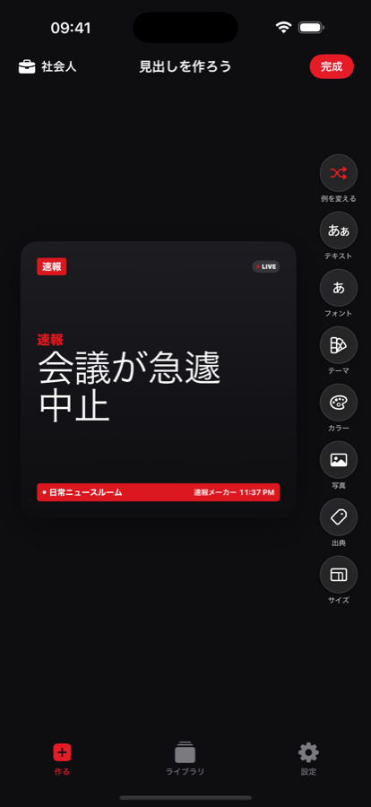
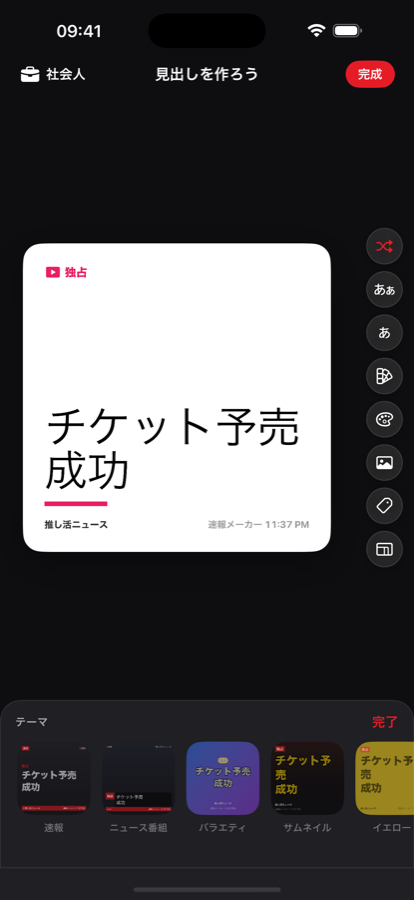
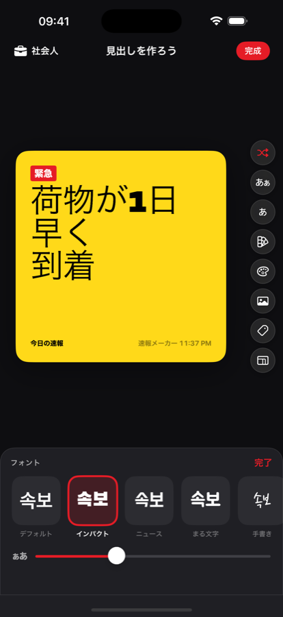
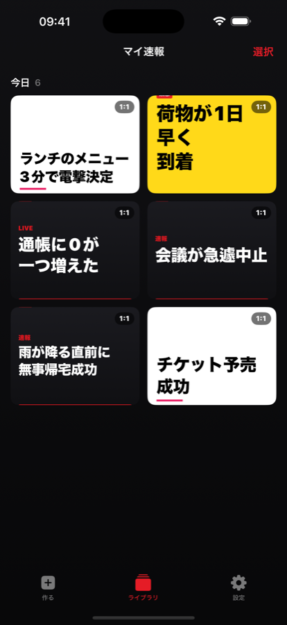

今日あったこと、一言で十分。速報メーカーが赤い速報バナー風に変換します。テーマを選び、フォントを選び、自分の切り抜き写真を貼り付けてミームとして保存しましょう。

今日あったこと、大きくても小さくても一言でOK。それが見出しに。
速報レッドから新聞紙面風まで14種のカードテーマ、雰囲気に合わせた12種のフォント。
必要な比率で画像として書き出し、グループLINEにそのまま投稿。
速報メーカーは一日の小さな出来事を、赤い速報バナー・太字・全角キャップスで格上げします。
14種のカードテーマを実際のニュース画面のようにプレビューし、気分に合うフォントを選んでみて。



速報、放送字幕、バラエティ字幕、新聞、雑誌、緊急速報など状況別スタイル。
インパクト、手書き、明朝、丸ゴシック — 見出しごとに違う声。
背景を自動で除去して、どんな写真もニュースの登場人物に。
学生・会社員・推し活・筋トレ・恋愛・ペット・就活・ゲーム・株まで、すぐ使える例文。
正方形、フィード4:5、ストーリー9:16、横長16:9 — 投稿先に合わせて書き出し。
すべて端末内で処理。無料、iPhone専用、登録不要。